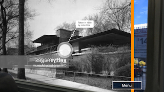
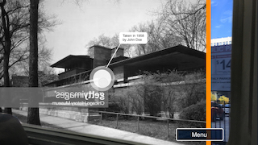

Overview
This is the second interaction design project in the Introduction class at IIT Institute of Design (ID).
Each student was assigned to design an augumented reality (AR) application which would be run on a window of CTA bus or train.
I made "Time Traveler in Chicago" that gives commuters and tourists opportunities of enjoying, experiencing and learning about the history of Chicago. The app projects old pictures on a window which were taken at the same location where a bus is running.


 
